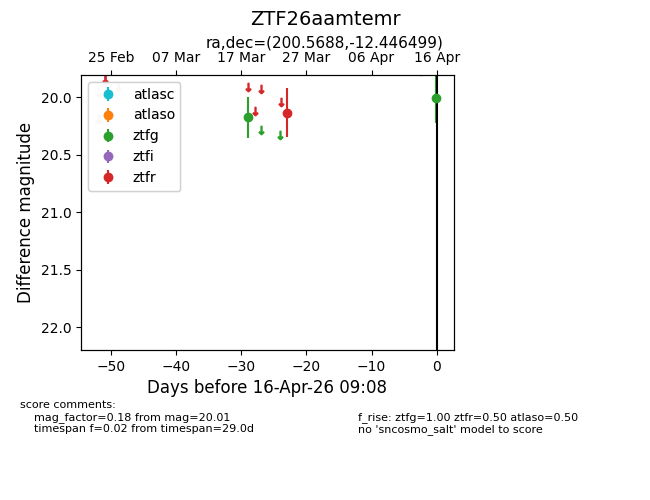
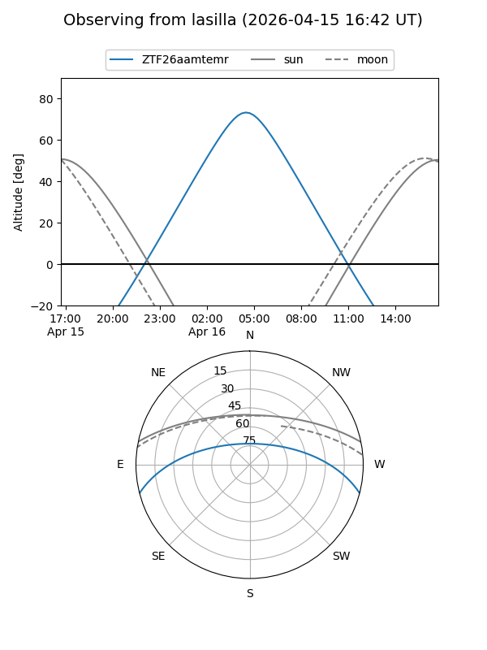
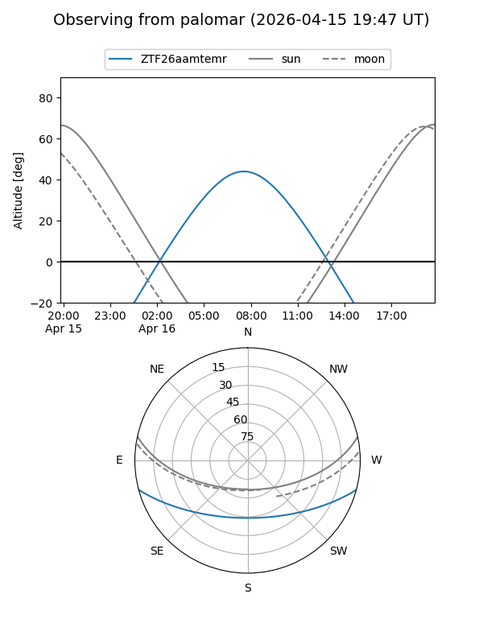

ZTF26aamtemr
Target ZTF26aamtemr at 2026-04-16 09:15
Aliases and brokers:
FINK: link
Lasair: link
ALeRCE: link
alt names
ZTF26aamtemr (ztf,fink_ztf)
Coordinates:
equatorial (ra, dec) = 200.5688,-12.44650
equatorial (HMS+DMS) = 13:22:16.51,-12:26:47.39
galactic (l, b) = (314.6228,+49.72397)
Flags:
Photometry:
last atlaso=nan, ztfg=20.01, ztfr=20.14
1 atlaso, 2 ztfg, 1 ztfr detections
Lightcurve

Visibility


Additional plots